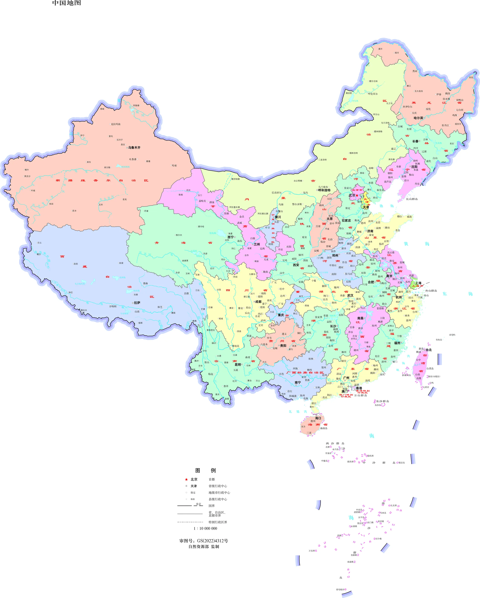

—— 重走二万五千里 · 12 站关键抉择 ——
1934—1935 年，中央红军从于都出发，血战湘江、四渡赤水、
飞夺泸定桥、翻雪山、过草地……
每一站，都有一道关系全军存亡的抉择题。
只有 11 个决策全部一次答对，长征才能胜利。
地图底图：自然资源部标准地图服务网站下载 · 审图号 GS(2022)4312 号
本作品仅在底图上叠加长征路线等专题要素，未对底图内容作任何修改。

底图：自然资源部标准地图服务网站下载，审图号 GS(2022)4312 号（1:1000 万中国全图，竖版）。本作品仅在底图上叠加长征路线、节点图标等专题要素，未对底图内容作任何修改。